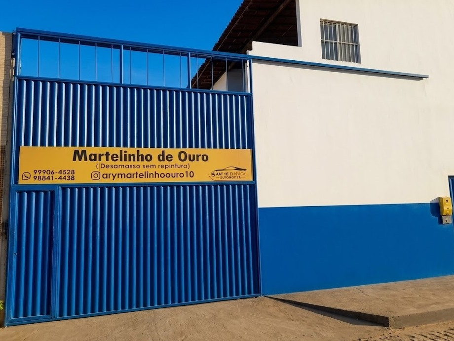

Martelinho de ouro
Correção de pequenos amassados com técnica precisa, buscando preservar a originalidade da lataria sempre que possível.
Correção de amassados, micro retoque, micro pintura, restauração de farol e polimento com atendimento direto na Rua Canal, 295, Bairro Tomba, Feira de Santana/BA.
Rua Canal, 295 - Bairro Tomba - Feira de Santana/BA - CEP: 44090420
A Martelinho de Ouro Ary FB começou em 2011 com polimento de farol, pintura automotiva e martelinho de ouro. Com o tempo, ampliou o atendimento para micro retoque, micro pintura e outros serviços de estética, sempre buscando atualização para entregar um resultado de alto nível.
Registrada desde março de 2022, a empresa atende motoristas que procuram confiança, capricho e um acabamento que valoriza o veículo.
Correção de pequenos amassados com técnica precisa, buscando preservar a originalidade da lataria sempre que possível.
Correções pontuais para marcas, riscos e detalhes que incomodam no visual do carro.
Intervenção localizada para renovar áreas específicas com acabamento cuidadoso.
Tratamento para recuperar transparência, aparência e presença dos faróis.
Realce de brilho e limpeza visual para deixar a pintura com aparência mais viva.
No martelinho de ouro, cada reflexo conta. A inspeção com luz ajuda a identificar ondulações, vincos e pequenos amassados para orientar um reparo mais limpo e controlado.
 (1).jpeg)
 (1).jpeg)
 (1).jpeg)
O processo combina técnica, avaliação visual e acabamento para devolver presença ao carro, seja em amassados, retoques, pintura localizada, faróis ou polimento.
Atendimento para clientes de São Gonçalo, São José, São Félix, Santa Bárbara, Serra Preta, Pé de Serra, Santo Antônio de Jesus, Santo Amaro, Serrinha, Conceição de Jacuípe, Conceição de Coité, Conceição de Feira, Cruz das Almas, Euclides da Cunha, Terra Nova, Coração de Maria, Alagoinhas, Catu, Teodoro Sampaio e Antônio Cardoso.
Envie fotos pelo WhatsApp, informe o serviço desejado e fale diretamente com a Martelinho de Ouro Ary FB.